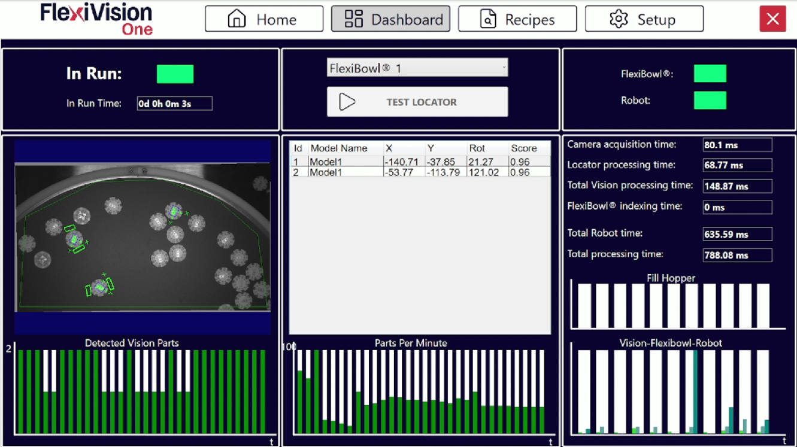

Application Monitoring: Dashboard#
The Dashboard is the main interface for real-time monitoring of the FlexiVision One system. On this page it is possible to verify process efficiency, analyze cycle times, validate component recognition, and identify any bottlenecks in the system.
Interface overview#
The Dashboard interface is divided into four main sections:

Operational Control: commands and execution status
Vision Analysis: display of detected parts and details
Performance Indicators: connectivity and cycle times
Graph Analysis: historical productivity and timing graphs
Operational Control - commands and execution status#
Element |
Description and function |
|---|---|
In Run |
Status indicator showing whether the system is currently operating. |
In Run Time |
Displays the total system operating time since application startup. |
FlexiBowl selection |
Dropdown menu used to select the specific FlexiBowl to monitor. |
Test Locator |
Captures an image of the viewing area and starts recognition of the parts currently present. |
Tip
Test Locator
Useful for:
verifying that parts are actually recognized by the vision system
checking Clearance reliability if a collision occurred between the robot and a component
Vision Analysis#
The center of the Dashboard displays the data related to the components identified by the vision system.
Detected Vision Parts#
Detected Vision Parts shows:
the real-time image acquired by the camera
a historical chart of detections over the last 30 seconds, showing the trend of recognized parts per acquisition
Detected models table#
Recognized component details
The table below the image lists all components present in the pick area with the following parameters:
Field |
Data Type |
Description |
|---|---|---|
Id |
Integer |
Progressive unique identifier of the component, |
X |
Millimeters |
X coordinate of the component. |
Y |
Millimeters |
Y coordinate of the component. |
Rot (Rotation) |
Degrees |
Rotation angle of the component. |
Score |
Percentage |
Percentage value, |
Score > 0.90, 90% |
|
Score 0.80-0.90, 80-90% |
|
Score 0.70-0.80, 70-80% |
|
Score < 0.70, below 70% |
|
Status and Performance Indicators#
Connectivity#
Status indicators for communication with external devices:
Indicator |
Description |
|---|---|
FlexiBowl |
Status of the hardware connection between the VisionController and the FlexiBowl. |
Robot |
Status of communication with the robot. |
Warning
Actions in case of disconnection
FlexiBowl red:
Verify the Ethernet cable from FlexiBowl to VisionController
Check FlexiBowl power supply
Verify FlexiBowl IP in FlexiBowl Setup
Try reconnecting or restarting the software
Robot red:
Verify the Ethernet cable from robot to VisionController
Check that the robot has opened the TCP/IP connection
Verify the TCP/IP port in Robot Setup
Check the robot program, VisionController IP address and port entered correctly in Robot Setup
In production, both indicators must always be green.
Timing analysis#
The system provides a detailed breakdown of cycle times in order to identify bottlenecks and optimize the process.
Time Item |
Description |
|---|---|
Camera Processing Time |
Time required for image acquisition from the camera sensor. Includes exposure time and data transfer. |
Locator Processing Time |
Time required by the vision algorithm to locate and recognize the components in the acquired image. It depends on the number of active models, model complexity, and number of Clearances. |
Total Vision Processing |
Sum of Camera and Locator times. It represents the total time required by the vision system to process one image and send the coordinates. |
Total FlexiBowl Time |
Time required by the FlexiBowl to execute a complete movement sequence. |
Total Robot Time |
Estimated or measured time for the complete robot Pick and Place operation. Includes approach, grasp, lift, deposit, and return. |
Total Processing Time |
Total time of the complete cycle, Vision plus FlexiBowl plus Robot. It represents the time from the start of one cycle to the start of the next. It determines the maximum theoretical productivity, PPM. |
Tip
How to interpret timings for optimization
The timing graph makes it possible to identify the system bottleneck:
If Total Vision Processing is the largest
Too many active models -> disable models that are not required
Models too complex -> simplify them using a higher Score Threshold
Too many Clearances -> reduce the number or size of the Clearances
Camera Processing too high -> reduce exposure time
If Total FlexiBowl Time is the largest
Too many pauses -> optimize Flip and Move synchronization and reduce stabilization pause, Pause X ms
Movement sequence too slow -> increase speed in Config FlexiBowl
Rotation angle too large -> reduce Move Angle
Shake too long -> increase SHAKE speed and reduce SHAKE cycles
If Total Robot Time is the largest
Robot trajectory not optimized -> optimize robot path planning
Robot speed too low -> increase movement speed if safe
Deposit distance too large -> reposition the deposit point closer
Gripper opening and closing too slow -> optimize gripper timing
Optimization goal: balance the three times to reduce overall Total Processing Time.
Graph Analysis#
The graphs in the lower part of the Dashboard enable predictive and diagnostic analysis of system performance over time.
1. Parts Per Minute, PPM#
Productivity graph |
Shows average system productivity expressed as parts picked per minute, Parts Per Minute. |
Characteristics |
|
Usage |
|
Tip
* - **PPM constant and stable**
-
- ✓ System well configured
- ✓ Parameters optimized
- ✓ No critical bottleneck
* - **PPM gradually decreasing**
-
- ⚠️ Possible component wear, for example FlexiBowl grip surface
- ⚠️ Hopper running low, if present, lower pressure means slower discharge
- ⚠️ Dirt accumulation on camera or lighting
* - **PPM with wide fluctuations**
-
- ⚠️ Process instability
- ⚠️ Intermittent recognition issues
- ⚠️ External interference, vibration or variable light
* - **Corrective actions**
-
- Analyze correlation with timing graphs
- Identify which subsystem, Vision, FlexiBowl, or Robot, causes the variation
- Intervene on the specific parameters
2. Fill Hopper#
Hopper activation graph |
Represents the history of discharge pulses sent to the hopper, useful for monitoring component stock autonomy. |
Characteristics |
|
Usage |
|
Tip
* - **Regular and constant activations**
-
- ✓ Hopper configuration optimal
- ✓ Stable and predictable part flow
- ✓ Autonomy can be estimated, for example one activation every 10 minutes
* - **Increasingly frequent activations**
-
- ⚠️ Hopper is running low, fewer parts mean more activations needed to maintain level
- ⚠️ Discharge Time insufficient for reduced volume
- **Action**: schedule hopper refill soon
* - **No activation for a long period**
-
- ⚠️ Robot stopped or slowed down, parts are not being consumed
- ⚠️ Possible system issue, no request for parts
- **Action**: verify production status
* - **Very close activations, burst**
-
- ⚠️ Hopper threshold configured incorrectly, too high
- ⚠️ Steps insufficient, parts do not arrive in time
- **Action**: review Hopper configuration
3. Vision - FlexiBowl - Robot, comparative graph#
Overlapped timing graph |
A comparative three-line graph that overlays process times over time. |
Usage |
Instantly identify which process affects total cycle time the most and how it changes over time. |
Quality monitoring - critical indicators to monitor#
Component score |
Make sure that the Score of detected components remains consistently above the tolerance threshold, Accept Threshold, configured during model setup. |
Score monitoring |
|
Progressive score decrease |
|
Corrective actions |
|
Best practices for production monitoring#
Daily checks#
At production start, 5 minutes |
|
During production, every 1-2 hours |
|
At end of shift, 2 minutes |
|
This minimal routine guarantees fast identification of problems and preserves performance traceability.
Performance reporting#
Tip
Key metrics to track For performance evaluation over time, track:
Daily |
|
Weekly |
|
Monthly |
|
This data supports continuous optimization and justifies investment in improvements.
Tip
System fully operational
The FlexiVision One system is now fully configured, optimized, and validated for production.
Completed path summary
✓ hardware setup, FlexiBowl, Robot, Camera
✓ complete calibration, Camera and Robot
✓ part models created and optimized
✓ FlexiBowl configured for optimal movement
✓ Hopper configured for automatic feeding, if present
✓ system validated through Dashboard monitoring
✓ performance verified and stable
The system is ready to operate in production with minimal supervision. Use the Dashboard for continuous monitoring and long-term optimization.
Total time invested: 4-8 hours, first complete system
Result: fully autonomous and optimized robotic picking system
Once the system has been validated through the Dashboard:
-> Troubleshooting - guide to solving common issues
-> Support - technical support contacts